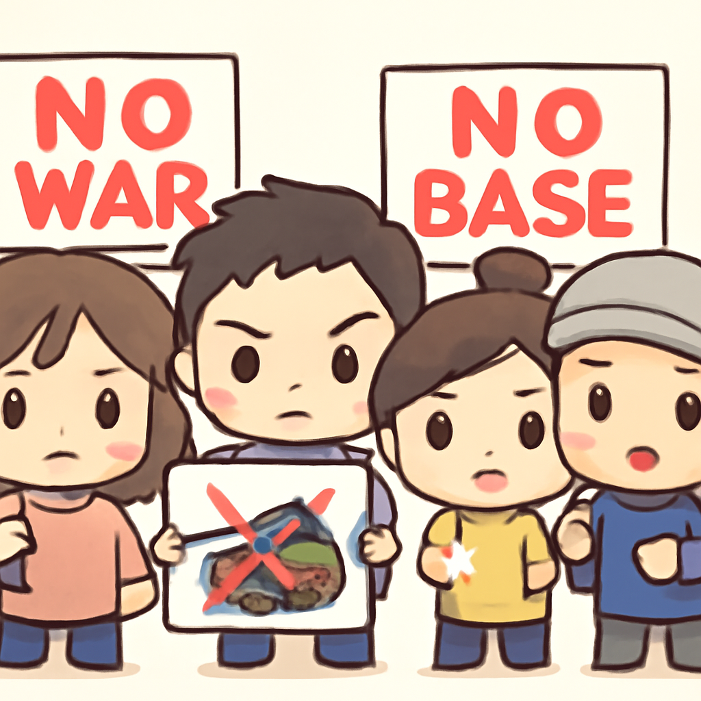
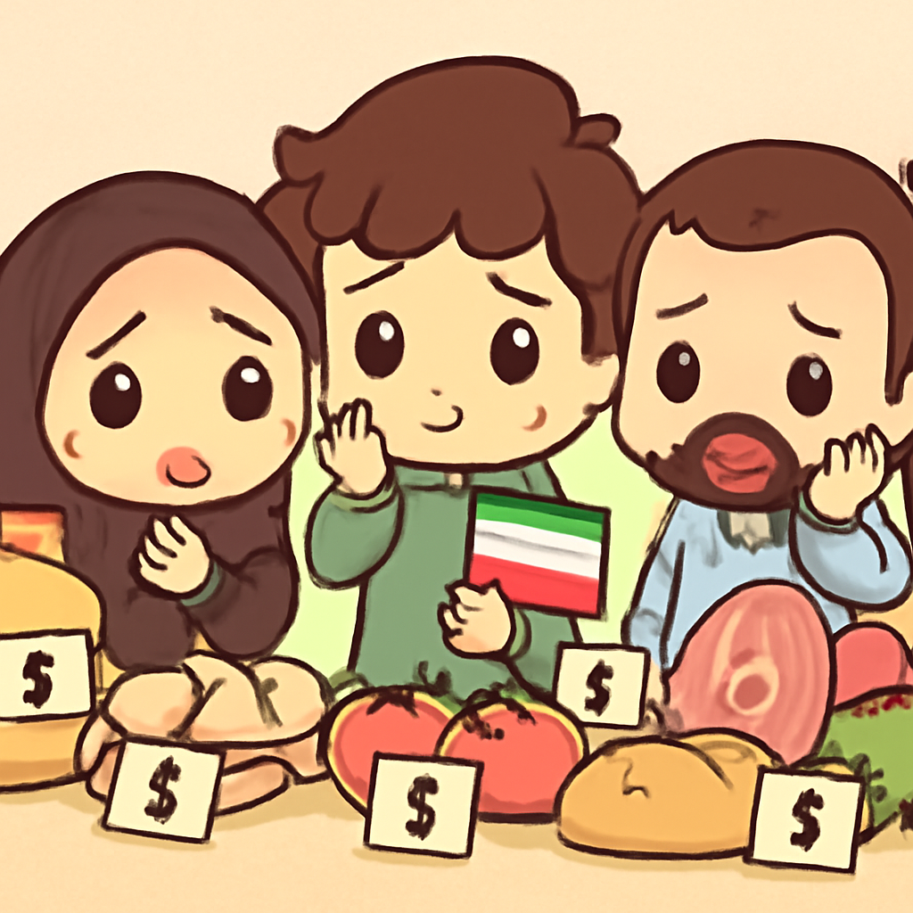

其一 · 烏克蘭基輔 · 俄羅斯無人機襲擊橋樑
基輔北橋再遭俄無人機攻擊
在烏克蘭基輔，俄羅斯無人機再次襲擊北部橋樑，造成大火球，這是連續第二天的攻擊。這次事件不僅對基輔的交通造成影響，也讓人們再次感受到戰爭的殘酷，讓人不禁想問：這橋到底是什麼架構，怎麼這麼容易被攻擊？
🔗 原始新聞 ↗
2026-10-05 · 以古觀今，以笑抗愁
基輔北橋再遭俄無人機攻擊
在烏克蘭基輔，俄羅斯無人機再次襲擊北部橋樑，造成大火球，這是連續第二天的攻擊。這次事件不僅對基輔的交通造成影響，也讓人們再次感受到戰爭的殘酷，讓人不禁想問：這橋到底是什麼架構，怎麼這麼容易被攻擊？
🔗 原始新聞 ↗
聯準會升息0.25%，市場反應兩極
美國聯準會宣布將利率上調0.25%，這對借貸成本和通膨控制有直接影響。市場反應不一，部分投資者感到不安，認為這可能會影響經濟復甦。不過，對於一些喜歡高風險高報酬的投資者而言，這或許是個機會。
🔗 原始新聞 ↗
也門政府誓言奪回被胡塞佔領土地
也門總統宣布全國進入全面戰爭，目標是奪回被胡塞武裝佔據的地區。這一變化來自於持續的武裝衝突，顯示出也門局勢的緊張程度正不斷升高。希望在這場鬧劇中，民眾能夠平安度過。
🔗 原始新聞 ↗
美軍士兵在沖繩被捕，事件引發抗議

在日本沖繩，一名美國海軍陸戰隊士兵因涉嫌殺害女性而被逮捕，這一事件引起了日本政府的正式抗議。這不僅讓美日之間的軍事合作關係受到挑戰，也再次點燃了民眾對美軍駐留的質疑。希望這次事件不會成為兩國關係的火藥桶。
🔗 原始新聞 ↗
伊朗高官警告經濟危機將至

伊朗國家安全官員透露，隨著美國加強制裁，伊朗經濟正面臨嚴峻挑戰。這一警告讓外界擔心該國的經濟未來，民眾生活將更加艱難。或許接下來的日子將會讓人懷念過去的「穩定」。
🔗 原始新聞 ↗